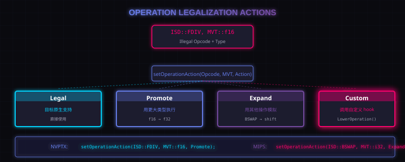

7. 操作合法化：Operation Legalization
类型合法化处理的是"类型"，但还有一个问题：即使类型合法了，操作本身也可能不被目标支持。
操作合法化的目标是：
核心目标
把目标不支持的操作转成目标支持的操作。
目标后端通过 setOperationAction(Opcode, MVT, Action) 来描述各种操作在不同类型上的处理方式。
7.1 四种操作 Action
| Action | 含义 |
|---|---|
Legal |
目标原生支持这个操作，不需要额外处理 |
Promote |
用更大类型来执行这个操作 |
Expand |
用其他操作的组合来模拟这个操作 |
Custom |
调用目标后端自定义的 Lowering hook |

配图：操作合法化策略图
7.2 Legal 例子
X86 目标中，ISD::ADD 对于 i32 通常是 Legal 的——目标有直接的 add 指令，不需要任何降级。
7.3 Promote 例子
NVPTX 目标中，ISD::FDIV 对于 f16 类型可能是 Promote 的——PTX 没有 div.approx.f16 指令，但可以把 f16 promote 成 f32，然后用 div.full.f32。
7.4 Expand 例子
MIPS 目标中，ISD::BSWAP 对于 i32 是 Expand 的——MIPS 没有 bswap 指令，需要用 shl、shr、or 等操作组合来实现。
7.5 Custom 例子
某些操作需要完全自定义处理。目标后端可以实现：
SDValue TargetLowering::LowerOperation(SDValue Op, SelectionDAG &DAG);
SelectionDAG 会调用这个 hook 来处理 Custom 操作。